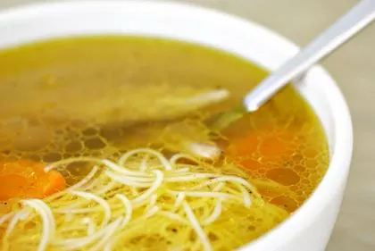

Nazaj
Najboljši recept za govejo juhico

Nedvomno ena od klasik slovenskih družinskih nedeljskih kosil. Ponudimo jo lahko s široko izbiro jušnih vložkov in zakuh.
Sestavine za 5 oseb
- 1kg govedine s kostmi
- 3x korene
- 1 peteršiljeva korenina
- 0.25 gomoljne zelene
- 0.5 paradižnika
- 1 manjši por
- 2 čebuli
- 2 stroka česna
- 1 ščepec soli
- 6 zrn črnega popra
- 1 lovorjev list
- 1 šopek peteršilja
- 1 vejica timijana
- 1 vejica majarona
- 1 vejica zelena
Priprava
- Goveje meso in kosti operemo ter obrišemo. Por operemo. Korenček in peteršiljevo korenino ostrgamo oz. olupimo in razrežemo na četrtine. Zeleno in čebulo olupimo ter razrežemo na večje kose. Iz nekaj vejic peteršilja, timijana, majarona in zelene naredimo zeliščni šopek.
- V večji lonec vlijemo 2,5 litra hladne vode, dodamo meso in čim hitreje zavremo. Ko juha zavre, temperaturo zmanjšamo za toliko, da tekočina komaj opazno brbota. S površine s penovko pobiramo pene.
- Ko se na površini nehajo delati pene, lonec pokrijemo (pustimo le manjšo špranjo) in na nizkem ognju juho kuhamo 90 minut.
- Juho odkrijemo in dodamo vso zelenjavo, poper, lovor, neolupljene stroke česna, luštrek in zeliščni šopek. Če se nam zdi, da je povrela velika količina vode, jo še dodamo (vendar naj bo vrela!), nato pa lonec napol pokrijemo in juho kuhamo še eno uro. Deset minut pred koncem kuhanja juho solimo.
- Juho odstavimo in pustimo stati 10 minut, da se nekoliko ohladi in zbistri. Nato jo precedimo skozi gosto žičnato cedilo.
- V precejeno juho po želji vkuhamo izbrano zakuho ali jušni vložek.
- Juho serviramo na krožnik in potresemo z nasekljanim peteršiljem ali drobnjakom. Serviramo jo lahko tudi z narezanim mesom in zelenjavo, ki sta se kuhala v juhi.